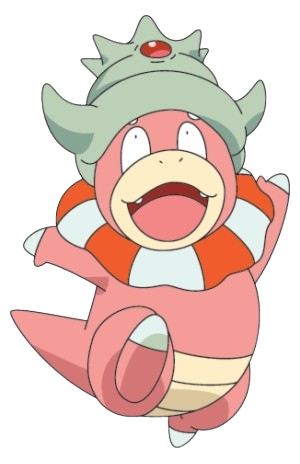

It’s very intelligent and can use an incredible variety of moves. Many believe that all other Pokémon are descendants of this one.
Blissey
Blissey is another pink-colored Normal-type Pokemon. This designation is somewhat surprising, as Blissey’s feminine design and happy appearance make it seem more like a Fairy-type.

Slowking
Slowking is one of the most intriguing Pokemon with some of the funniest lore of the whole series. The big difference: the Shellder clamped to its head like a crown.